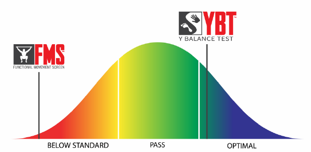

Ryan, you have completed screening tests designed to determine your musculoskeletal status and injury potential. Injuries are difficult to predict, that’s why we use only the most up-to-date, research-based tests.
We combine these evidence based factors to categorize your individual performance.
Ryan, you are in the MODERATE deficit category. Based on the research, the algorithm indicates you are more likely than your peers to lose time from your sport or activity.
Here are your results compared to other College Football athletes.
